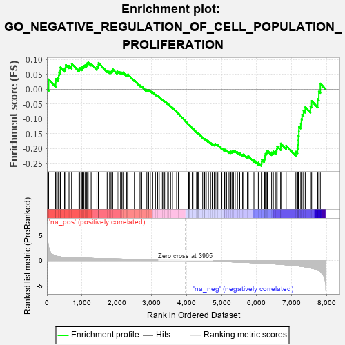
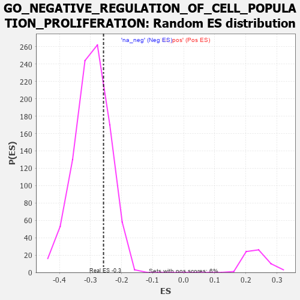

| | | Dataset | 7d |
| Phenotype | NoPhenotypeAvailable |
| Upregulated in class | na_neg |
| GeneSet | GO_NEGATIVE_REGULATION_OF_CELL_POPULATION_PROLIFERATION |
| Enrichment Score (ES) | -0.2581661 |
| Normalized Enrichment Score (NES) | -0.87007064 |
| Nominal p-value | 0.75106835 |
| FDR q-value | 0.96556157 |
| FWER p-Value | 1.0 |
Table: GSEA Results Summary

Fig 1: Enrichment plot: GO_NEGATIVE_REGULATION_OF_CELL_POPULATION_PROLIFERATION
Profile of the Running ES Score & Positions of GeneSet Members on the Rank Ordered List
| PROBE | GENE SYMBOL | GENE_TITLE | RANK IN GENE LIST | RANK METRIC SCORE | RUNNING ES | CORE ENRICHMENT | | 1 | TGFB3 | | | 49 | 2.654 | 0.0330 | No |
| 2 | INSM1 | | | 250 | 0.939 | 0.0214 | No |
| 3 | LBX1 | | | 254 | 0.929 | 0.0348 | No |
| 4 | KLF11 | | | 318 | 0.788 | 0.0384 | No |
| 5 | DLL1 | | | 337 | 0.760 | 0.0473 | No |
| 6 | CNOT7 | | | 348 | 0.750 | 0.0572 | No |
| 7 | AXIN2 | | | 383 | 0.713 | 0.0634 | No |
| 8 | BAX | | | 387 | 0.711 | 0.0735 | No |
| 9 | MYOD1 | | | 504 | 0.628 | 0.0680 | No |
| 10 | PKN1 | | | 535 | 0.619 | 0.0733 | No |
| 11 | SRF | | | 542 | 0.615 | 0.0817 | No |
| 12 | GLMN | | | 632 | 0.583 | 0.0789 | No |
| 13 | CDC6 | | | 709 | 0.557 | 0.0775 | No |
| 14 | VASH1 | | | 712 | 0.556 | 0.0854 | No |
| 15 | WDR6 | | | 916 | 0.504 | 0.0669 | No |
| 16 | PDCD4 | | | 941 | 0.497 | 0.0712 | No |
| 17 | MEN1 | | | 1003 | 0.483 | 0.0706 | No |
| 18 | MED31 | | | 1017 | 0.480 | 0.0761 | No |
| 19 | MEF2C | | | 1054 | 0.473 | 0.0785 | No |
| 20 | CDK10 | | | 1092 | 0.465 | 0.0806 | No |
| 21 | NCK2 | | | 1131 | 0.458 | 0.0826 | No |
| 22 | MTSS1 | | | 1149 | 0.454 | 0.0871 | No |
| 23 | TFDP1 | | | 1180 | 0.450 | 0.0899 | No |
| 24 | CDC73 | | | 1265 | 0.436 | 0.0856 | No |
| 25 | RBM10 | | | 1430 | 0.404 | 0.0707 | No |
| 26 | PDS5B | | | 1432 | 0.403 | 0.0765 | No |
| 27 | DACH1 | | | 1471 | 0.395 | 0.0775 | No |
| 28 | WDR13 | | | 1475 | 0.394 | 0.0830 | No |
| 29 | TIMP2 | | | 1478 | 0.394 | 0.0886 | No |
| 30 | MEIS1 | | | 1723 | 0.351 | 0.0626 | No |
| 31 | STRAP | | | 1793 | 0.339 | 0.0588 | No |
| 32 | RNF10 | | | 1833 | 0.331 | 0.0587 | No |
| 33 | SMAD4 | | | 1860 | 0.326 | 0.0602 | No |
| 34 | NUP62 | | | 1871 | 0.324 | 0.0637 | No |
| 35 | UTP20 | | | 1882 | 0.322 | 0.0672 | No |
| 36 | FOXO4 | | | 2004 | 0.304 | 0.0562 | No |
| 37 | RAF1 | | | 2011 | 0.303 | 0.0599 | No |
| 38 | PEX2 | | | 2056 | 0.298 | 0.0587 | No |
| 39 | BMP7 | | | 2107 | 0.290 | 0.0566 | No |
| 40 | ATOH8 | | | 2145 | 0.285 | 0.0561 | No |
| 41 | DDR1 | | | 2176 | 0.280 | 0.0564 | No |
| 42 | EAF2 | | | 2278 | 0.263 | 0.0474 | No |
| 43 | REST | | | 2308 | 0.259 | 0.0475 | No |
| 44 | MED25 | | | 2320 | 0.257 | 0.0500 | No |
| 45 | KAT2B | | | 2502 | 0.226 | 0.0302 | No |
| 46 | ARID2 | | | 2664 | 0.204 | 0.0126 | No |
| 47 | PHB2 | | | 2712 | 0.197 | 0.0095 | No |
| 48 | PHF14 | | | 2838 | 0.178 | -0.0038 | No |
| 49 | NR2E1 | | | 2844 | 0.177 | -0.0019 | No |
| 50 | PDCD5 | | | 2885 | 0.169 | -0.0045 | No |
| 51 | FGFR2 | | | 2895 | 0.167 | -0.0031 | No |
| 52 | RBM5 | | | 2910 | 0.164 | -0.0025 | No |
| 53 | BTK | | | 2958 | 0.156 | -0.0062 | No |
| 54 | BRD7 | | | 3018 | 0.147 | -0.0116 | No |
| 55 | BRCA2 | | | 3024 | 0.146 | -0.0100 | No |
| 56 | AIMP1 | | | 3105 | 0.136 | -0.0182 | No |
| 57 | SFRP5 | | | 3154 | 0.129 | -0.0225 | No |
| 58 | PAX6 | | | 3170 | 0.127 | -0.0225 | No |
| 59 | PRDX4 | | | 3214 | 0.120 | -0.0262 | No |
| 60 | SMAD3 | | | 3303 | 0.105 | -0.0359 | No |
| 61 | SMAD1 | | | 3337 | 0.099 | -0.0387 | No |
| 62 | SMAD7 | | | 3369 | 0.093 | -0.0412 | No |
| 63 | MED1 | | | 3405 | 0.089 | -0.0444 | No |
| 64 | PTPRK | | | 3454 | 0.084 | -0.0493 | No |
| 65 | HGS | | | 3476 | 0.080 | -0.0508 | No |
| 66 | NELL1 | | | 3538 | 0.070 | -0.0576 | No |
| 67 | CHERP | | | 3587 | 0.062 | -0.0628 | No |
| 68 | TNS2 | | | 3588 | 0.062 | -0.0619 | No |
| 69 | NF1 | | | 3713 | 0.040 | -0.0771 | No |
| 70 | HSF1 | | | 3718 | 0.039 | -0.0770 | No |
| 71 | SKI | | | 3762 | 0.032 | -0.0821 | No |
| 72 | DDAH1 | | | 4056 | -0.016 | -0.1193 | No |
| 73 | SFRP2 | | | 4065 | -0.018 | -0.1200 | No |
| 74 | DDX20 | | | 4083 | -0.021 | -0.1219 | No |
| 75 | HNF4A | | | 4157 | -0.034 | -0.1307 | No |
| 76 | PDX1 | | | 4179 | -0.038 | -0.1328 | No |
| 77 | WNT11 | | | 4282 | -0.056 | -0.1450 | No |
| 78 | STRN | | | 4307 | -0.060 | -0.1472 | No |
| 79 | CTBP1 | | | 4323 | -0.064 | -0.1482 | No |
| 80 | CD109 | | | 4325 | -0.064 | -0.1474 | No |
| 81 | NDRG1 | | | 4456 | -0.085 | -0.1627 | No |
| 82 | ILK | | | 4510 | -0.096 | -0.1681 | No |
| 83 | PINX1 | | | 4515 | -0.097 | -0.1671 | No |
| 84 | APC | | | 4558 | -0.107 | -0.1709 | No |
| 85 | GATA3 | | | 4614 | -0.120 | -0.1762 | No |
| 86 | DLG5 | | | 4619 | -0.121 | -0.1749 | No |
| 87 | NUDT6 | | | 4682 | -0.135 | -0.1808 | No |
| 88 | CNN1 | | | 4727 | -0.144 | -0.1843 | No |
| 89 | FBLN1 | | | 4748 | -0.149 | -0.1846 | No |
| 90 | PIM2 | | | 4789 | -0.155 | -0.1875 | No |
| 91 | TERT | | | 4801 | -0.157 | -0.1865 | No |
| 92 | PPM1D | | | 4805 | -0.158 | -0.1846 | No |
| 93 | FBXW7 | | | 4816 | -0.161 | -0.1835 | No |
| 94 | DLG1 | | | 4860 | -0.169 | -0.1865 | No |
| 95 | SLIT3 | | | 4890 | -0.175 | -0.1876 | No |
| 96 | KLF4 | | | 5005 | -0.198 | -0.1992 | No |
| 97 | ING4 | | | 5084 | -0.221 | -0.2059 | No |
| 98 | DRD2 | | | 5088 | -0.221 | -0.2030 | No |
| 99 | FLCN | | | 5140 | -0.235 | -0.2060 | No |
| 100 | ATM | | | 5210 | -0.249 | -0.2112 | No |
| 101 | KRIT1 | | | 5248 | -0.257 | -0.2121 | No |
| 102 | PTEN | | | 5262 | -0.261 | -0.2099 | No |
| 103 | MAGI2 | | | 5295 | -0.269 | -0.2100 | No |
| 104 | CD9 | | | 5319 | -0.277 | -0.2088 | No |
| 105 | TOB2 | | | 5337 | -0.282 | -0.2068 | No |
| 106 | FZD5 | | | 5386 | -0.292 | -0.2086 | No |
| 107 | FRK | | | 5451 | -0.307 | -0.2123 | No |
| 108 | VDR | | | 5517 | -0.325 | -0.2158 | No |
| 109 | SMYD2 | | | 5598 | -0.344 | -0.2209 | No |
| 110 | ROR2 | | | 5626 | -0.353 | -0.2191 | No |
| 111 | TPTE2 | | | 5736 | -0.388 | -0.2273 | No |
| 112 | TLR2 | | | 5761 | -0.395 | -0.2245 | No |
| 113 | STK11 | | | 5922 | -0.443 | -0.2384 | No |
| 114 | NR2E3 | | | 6048 | -0.488 | -0.2472 | No |
| 115 | IFT80 | | | 6135 | -0.515 | -0.2505 | Yes |
| 116 | STK4 | | | 6145 | -0.518 | -0.2440 | Yes |
| 117 | FEZF2 | | | 6150 | -0.519 | -0.2368 | Yes |
| 118 | SMAD2 | | | 6216 | -0.541 | -0.2371 | Yes |
| 119 | TPM1 | | | 6226 | -0.545 | -0.2302 | Yes |
| 120 | RGN | | | 6233 | -0.547 | -0.2229 | Yes |
| 121 | TFAP4 | | | 6254 | -0.556 | -0.2172 | Yes |
| 122 | IFT52 | | | 6280 | -0.566 | -0.2120 | Yes |
| 123 | IFT57 | | | 6307 | -0.579 | -0.2068 | Yes |
| 124 | CSK | | | 6428 | -0.630 | -0.2128 | Yes |
| 125 | SOX2 | | | 6477 | -0.652 | -0.2092 | Yes |
| 126 | RERG | | | 6551 | -0.684 | -0.2084 | Yes |
| 127 | ROBO1 | | | 6577 | -0.699 | -0.2013 | Yes |
| 128 | RNF41 | | | 6588 | -0.703 | -0.1921 | Yes |
| 129 | CERS2 | | | 6689 | -0.756 | -0.1937 | Yes |
| 130 | PAK1 | | | 6691 | -0.757 | -0.1826 | Yes |
| 131 | PTH1R | | | 6845 | -0.839 | -0.1898 | Yes |
| 132 | RBBP4 | | | 7123 | -1.010 | -0.2102 | Yes |
| 133 | AR | | | 7169 | -1.046 | -0.2005 | Yes |
| 134 | PTPRJ | | | 7180 | -1.054 | -0.1861 | Yes |
| 135 | TSPO | | | 7194 | -1.065 | -0.1720 | Yes |
| 136 | OVOL2 | | | 7197 | -1.068 | -0.1565 | Yes |
| 137 | MFN2 | | | 7208 | -1.081 | -0.1417 | Yes |
| 138 | IFT74 | | | 7211 | -1.085 | -0.1259 | Yes |
| 139 | PLPP1 | | | 7262 | -1.135 | -0.1155 | Yes |
| 140 | CIB1 | | | 7280 | -1.152 | -0.1006 | Yes |
| 141 | MSX2 | | | 7299 | -1.171 | -0.0856 | Yes |
| 142 | OVOL1 | | | 7341 | -1.214 | -0.0728 | Yes |
| 143 | DLEC1 | | | 7390 | -1.255 | -0.0604 | Yes |
| 144 | GAS8 | | | 7540 | -1.455 | -0.0579 | Yes |
| 145 | NLRC3 | | | 7574 | -1.515 | -0.0396 | Yes |
| 146 | CASP3 | | | 7747 | -1.902 | -0.0334 | Yes |
| 147 | ST18 | | | 7780 | -2.007 | -0.0078 | Yes |
| 148 | PKD2 | | | 7822 | -2.167 | 0.0190 | Yes |
Table: GSEA details [plain text format]

Fig 2: GO_NEGATIVE_REGULATION_OF_CELL_POPULATION_PROLIFERATION: Random ES distribution
Gene set null distribution of ES for GO_NEGATIVE_REGULATION_OF_CELL_POPULATION_PROLIFERATION